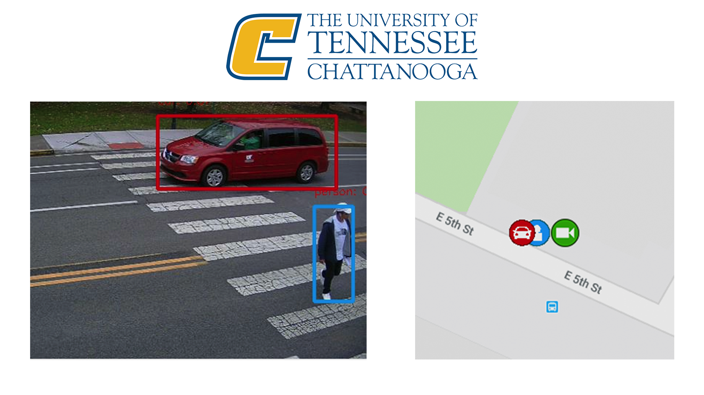
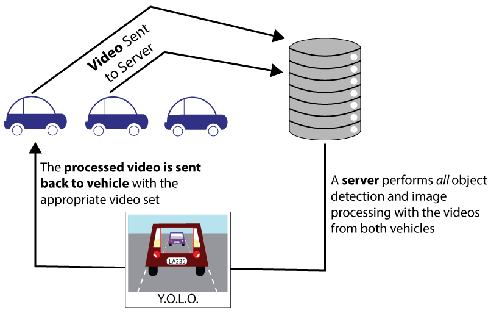
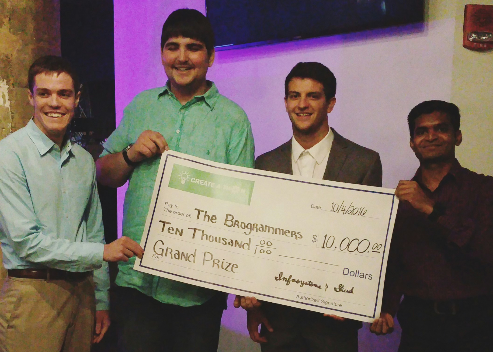
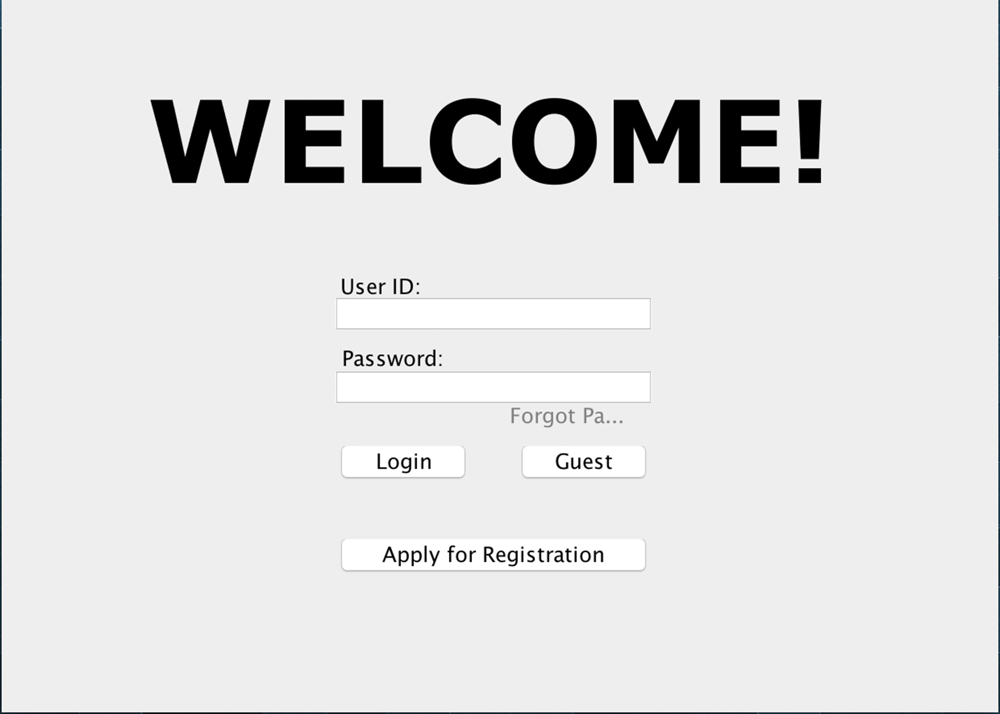
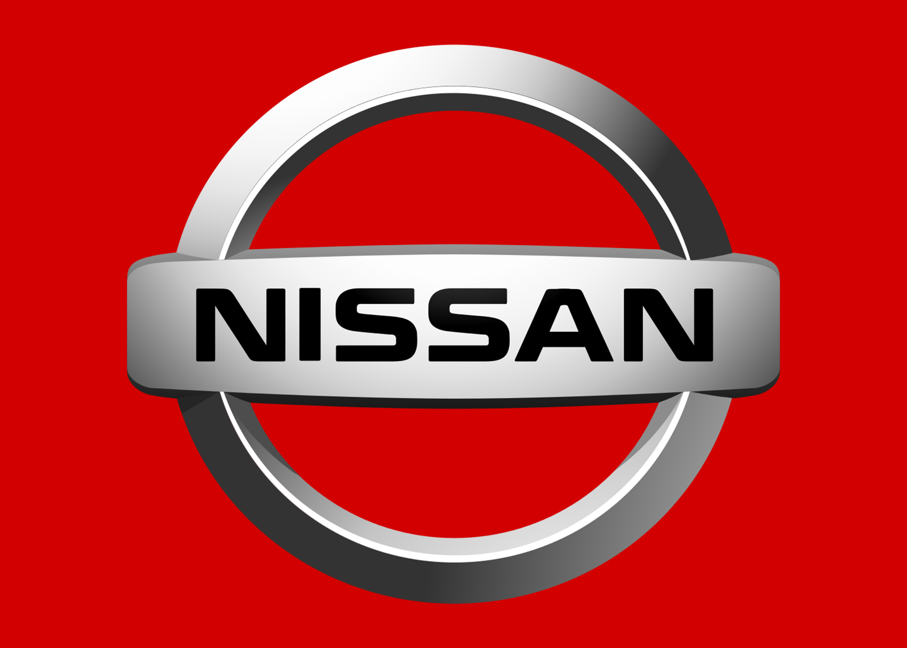
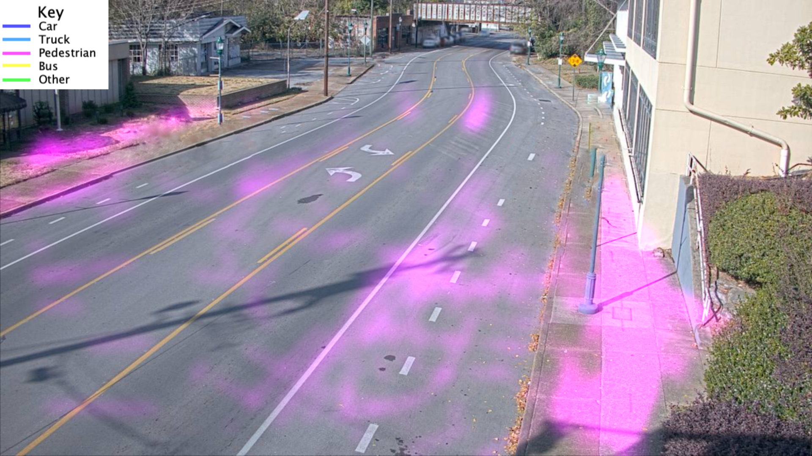
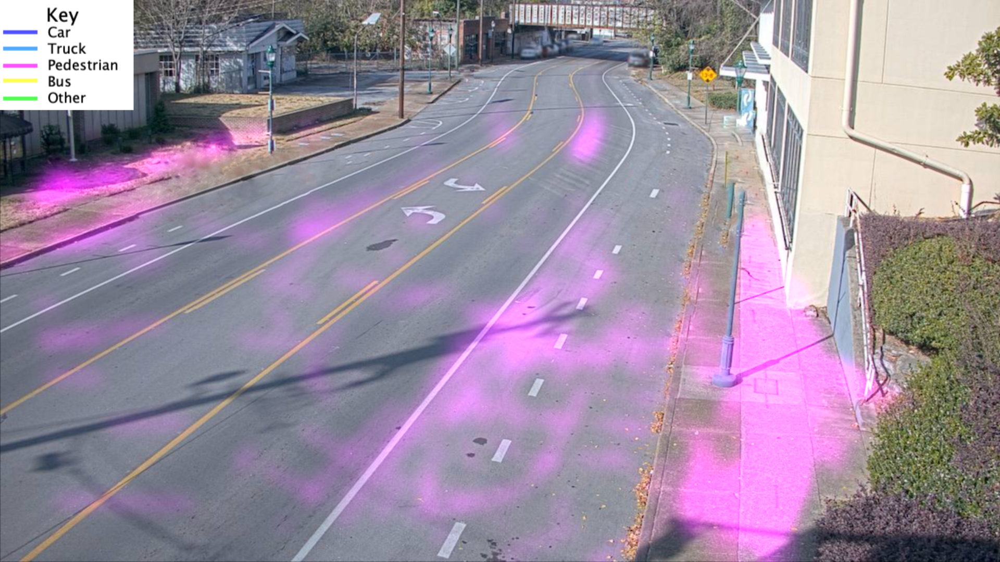

UTC CUIP Smart Corridor
Programming Experience
These are only the highlights, check out my GitHub for more.


USIgnite SCCC 2018

USIgnite SCCC 2017

Create-A-Thon

Software Design Project

Nissan of Murfreesboro
2019 USIgnite Conference
In 2018, Dr. Mina Sartipi at The University of Tennessee at Chattanooga started a research group
in the SimCenter, the Center for Urban Informatics
and Progress
(CUIP). CUIP has aimed to be a nexus for collaboration with members of the city, other
universities, and more. With our partnerships, we have been granted 16 poles on a mile-long
stretch of Martin Luther King Blvd.. With this, we have launched a scalable infrastructure
capable of expanding both hardware and software. As part of an ever-expanding project, I have
created an object tracker (seen here) that is parallelized, resilient and produces nearly 500,000 data
entries a week per camera. This algorithm allows us to store anonymous data on Kafka, and
functions in real time. This algorithm allows for many data analytics in the future, and
has already revealed many trends that can be addressed by the city or its members.
Below is a graphic which has been generated using OpenCV2 and the data gathered from the application I have created. WIth it, it is easy to see many trends.

You can also watch an anonymized live stream below!
Below is a graphic which has been generated using OpenCV2 and the data gathered from the application I have created. WIth it, it is easy to see many trends.

You can also watch an anonymized live stream below!
To follow up on our CAV (Connected Autonomous Vehicles) initiative, for the 2018 conference the team decided to work on a unified map for anonymously mapping many subjects of interest. For the most part, the above video I made should suffice as explanation, but it was fun being the only one working on the infrastructure end.
Without a doubt, we couldn't have done this without Andrew Rodgers, so a million thanks to him for helping us with our testbed.
2017 USIgnite Smart Cities Connect Conference
This programming project was quite a hurdle for me. The 2017 SCCC was in late June, and I joined the research group in early May. I had never done networking, computer vision or machine learning in my life, nor had I ever written in Python. Yet our team managed to get this together, with myself handling at least 70% of the workload. This project had a live-demo that took everyone by surprise, but was incredibly stressful on my end. Nonetheless, this was the first time that I felt confident that I could accomplish anything I ever wanted.
First Annual Create-A-Thon - October 2016
"CECS Students also took top honors during the app development component of Startup week.
InfoSystems and Skuid presented a $10K scholarship to grand prize winners Alay Patel, Jose
Stovall,
Steven Hullander, and Evan Grayson, who are all juniors in the
Computer Science and Engineering Department. The fifteen teams in the competition were tasked
with
creating a mobile app that allows consumers to digitally keep track of their physical
conditions.
The first and second place teams
excelled in creating an inviting and intuitive UX/UI design, but the UTC “Brogrammers” took it a
step further by adding a mini-game to their app." ~Holley Beeland
This was my first detailed look at HTML, CSS and JavaScript - before this point I only had minor experience, and still only consider myself amateur at best. Regardless, this was a fantastic learning experience and great practive of my program design skills!
App's Repository
This was my first detailed look at HTML, CSS and JavaScript - before this point I only had minor experience, and still only consider myself amateur at best. Regardless, this was a fantastic learning experience and great practive of my program design skills!
App's Repository
Fantastic Five - Spring 2016
This wasn't my first use of Java's Libraries to produce a desktop program, but this was my first
attempt to make a good one! As part of an assigned group, myself and 4 others were
instructed
to design (using any language)
a Class Registration Program. I feel as though this program was a large accomplishment for us
all -
it had several productivity-intensive features, such as the ability to print schedules, add and
remove users, and more!
In the end, I truly feel like we all brought something special to the table. One of the group members taught me about Java Serialization and how wonderful it can be. Meanwhile, I brought about a structure for our window system, how the window's contents would be managed and placed, as well as how the UI was going to dynamically theme itself based on Operating System.
Program's Repository
In the end, I truly feel like we all brought something special to the table. One of the group members taught me about Java Serialization and how wonderful it can be. Meanwhile, I brought about a structure for our window system, how the window's contents would be managed and placed, as well as how the UI was going to dynamically theme itself based on Operating System.
Program's Repository
Nissan of Murfreesboro - December 2015
I will not be revealing too much information for the sake of respect to the Nissan dealership
which
offered me the program contract, but this marks the first time I was ever paid to
program!
The program was a simple, UI-based
string comparator which allowed a user to select a file, paste a list, and then compare both
string
collections and output which did not match. While this sounds vague, consider it in the context
of
comparing incoming vehicles
with current stock.
Source Code is Private
Source Code is Private
Modding Minecraft - Current
This is not only a hobby, but a passion. All of my mods are open-source and licensed under GNU
GPL
for others to learn from my code, the same way that I learned from others!
I enjoy playing games, and writing mods for Minecraft is a great way of practicing programming, debugging, API usage and more. All of my mods depend on the Minecraft Forge API. As a result, I constantly aim to maximize compatibility with up to thousands of other mods, plus for each Minecraft update I must adapt my code to not only Minecraft's codebase changes, but Forge's as well.
The result? I feel like my ability to be tossed into any programming environment and survive is much better than most programmers which are still studying in school.
Home to All My Mods
I enjoy playing games, and writing mods for Minecraft is a great way of practicing programming, debugging, API usage and more. All of my mods depend on the Minecraft Forge API. As a result, I constantly aim to maximize compatibility with up to thousands of other mods, plus for each Minecraft update I must adapt my code to not only Minecraft's codebase changes, but Forge's as well.
The result? I feel like my ability to be tossed into any programming environment and survive is much better than most programmers which are still studying in school.
Home to All My Mods